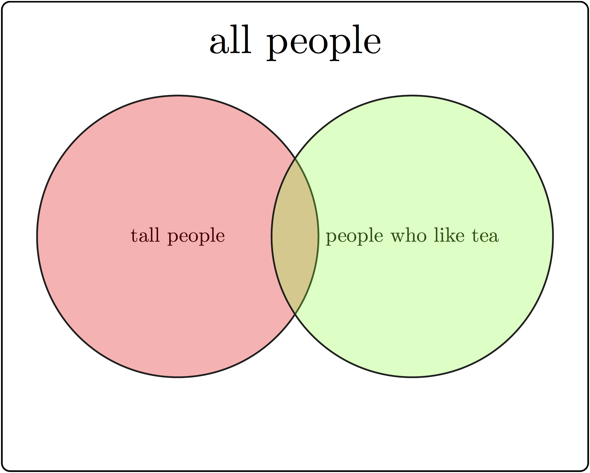
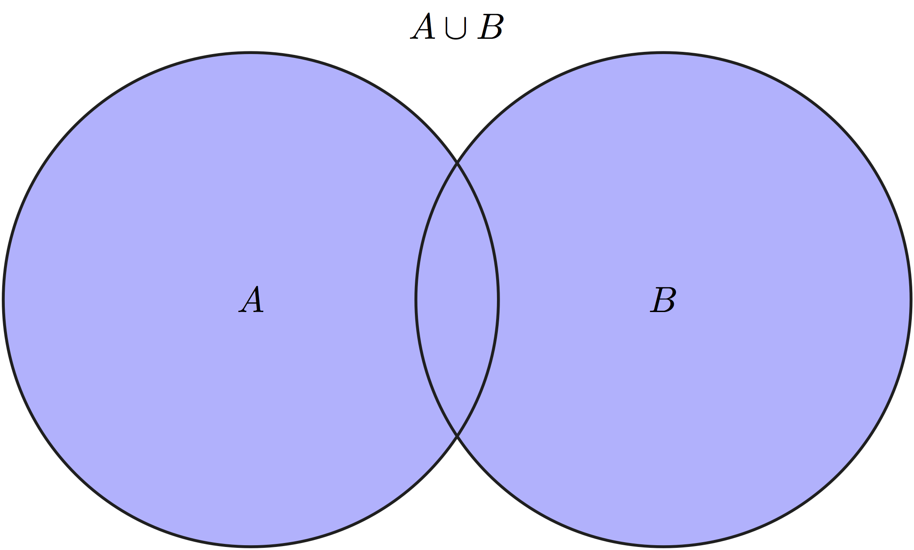

4 Random variables and distributions
What is there then that can be taken as true? Perhaps only this one thing, that nothing at all is certain. –Rene Descartes
Mathematical models can be divided into deterministic and stochastic models. Deterministic models assume that the future can be perfectly predicted based on complete information of the past. Stochastic models instead assume that even perfect knowledge of the past does not allow one to predict the future with certainty.
Stochastic models may not sound very promising: after all, we want to make predictions, and randomness says that predictions are impossible! However, the word “random” in mathematics doesn’t mean “completely unpredictable” or “without rules,” as it does in common usage. It means that we can make probabilistic predictions, e.g. compute what fraction of molecules will diffuse from one place to another, or what fraction of genes mutate in one generation - we just can’t make a definite prediction for each individual molecule or gene. Biological processes are so complex and are subject to so much environmental noise, that stochastic models are absolutely essential for our understanding of many living systems. Here is what you will learn to do in this chapter:
define probability in terms of outcomes and events
know what is a random variable and its distribution
compute means and variances of distributions
use the binomial distribution to model strings of binary trials
generate random numbers in R
4.1 Random variables and distributions
4.1.1 definition of probability
In this section we will develop the terminology used in the mathematical study of randomness called probability. This begins with a random experiment which is a very broad term that can describe any natural or theoretical process whose outcome cannot be predicted with certainty. If the outcomes are numeric, they may be discrete (can be counted by integers) or continuous (corresponding to real numbers); they may also be categorical, meaning that they do not have a numeric meaning, like eye color. We will stick to experiments that have discrete outcomes in this chapter, but many important experiments produce continuous outcomes. The first step for studying a random process is to describe all of the outcomes it can produce:
The collection of all possible outcomes of an experiment is called its sample space \(\Omega\). An event is a subset of the sample space, which means an event may contain one or more experimental outcomes.

Example. You can ask a person two questions: how tall are you (and classify them either as short or tall) and do you like tea (yes or no), and you’ve performed a random experiment. The randomness comes not from the answers (assuming the person doesn’t randomly lie) but from the selection of the respondent. We will discuss randomly selecting a sample from a population in the next chapter. This random experiment has four outcomes: tall person who likes tea, tall person who does not like tea, short person who likes tea, and short person who does not like tea. This sample space and events is illustrated in figure \(\ref{fig:ch4_sample_space}\) with a Venn diagram, which uses geometric shapes as representations of events as subsets of the entire sample space. These outcomes can be grouped into events by one of the responses: e.g. tall person (\(A\)) or person who doesn’t like tea (\(-B\)).
Example. A random experiment with two outcomes, called a Bernoulli trial (after the famous Swiss mathematician), can describe a variety of situations: a coin toss (heads or tails), a competition with two outcomes (win or loss), the allele of a gene (normal or mutant). The sample space for a single Bernoulli trial consists of just two outcomes: \(\{H,T\}\) (for a coin toss). If the experiment is performed repeatedly, the sample space gets more complicated. For two Bernoulli trials there are four different outcomes \(\{HH, HT, TH, TT \}\). One can define different events for this sample space: the event of getting two heads in two tosses contains one outcome: \(\{HH\}\), the event of getting a single head contains two: \(\{TH, HT\}\).
In order to to describe the composition of a sample space, we need to define the word probability . While it is familiar to everyone from everyday usage, it is difficult to define without using other similar words, such as likelihood or plausibility, which are also in need of definition. It is accepted that something with a high probability happens often, while something with a low frequency is seldom observed. The other notion is that probability can range between 0 (meaning something that never occurs) and 1 (something that occurs every time). These notions lead to the commonly accepted definition:
The probability of an outcome or event in the sample space of a random experiment is the fraction of experiments with this outcome out of many repeated experiments.
This definition is at the heart of the frequentist view of probability, due to the underlying assumption that the experiment can be repeated as many times as necessary to observe the frequency of outcomes. There is an alternative view that focuses on what is previously known about the experiment (or about systems that produce that kind of experiment) that is called the Bayesian view:
The probability of an outcome or event in the sample space of a random experiment is the degree of certainty or belief that this outcome will occur based on prior experience.
We will investigate the Bayesian approach in chapter 12. Most of traditional probability and classical statistics is based on the frequentist view, as it grew out of attempts to understand games of chance, like cards and dice, which can be easily repeated, or simple experiments like those in agriculture, where many plots can be planted and observed. These easily repeatable simple experiments can be described with mathematical distributions that we will describe in this chapter. However, many contemporary research problems are not so easily repeated, and often require a Bayesian approach that does not yield to neat mathematical description and can be addressed using computation.
4.1.2 axioms of probability
One we have defined the probability of an outcome, one can calculate the probability of a collection of outcomes according to rules that ensure the results are self-consistent. These rules are called the axioms of probability:
The probability \(P(A)\) of an event \(A\) in a sample space \(\Omega\) is a number between 0 and 1, which obeys the following rules, called the axioms of probability:
- \(P(\Omega) = 1\)
- \(P(\emptyset) = 0\)
- \(P(A \cup B) = P(A) + P(B) - P(A \cap B)\)
Let us define some notation for sets: \(A \cup B\) is called the union of two sets, which contains all outcomes that belong to either \(A\) or \(B\), this is equivalent to the logical OR operator because it is true if either A or B is true. \(A\cap B\) is called the intersection of two sets, which contains all outcomes that are in both \(A\) and \(B\), this is is equivalent to the logical AND operator because it is true if both A and B are true. The \(\emptyset\) denotes the empty set. Any event \(A\) has its complement, denoted \(-A\), which contains all outcomes of \(\Omega\) which are not in \(A\).
Applying them to the sample space and events in Figure 4.1, the union of the two sets \(A \cup B\) are all people who are either tall or like tea, the intersection of the two sets \(A\cap B\) are all the tall people who like tea, and the intersection of the first set with the complement of the second \(A \cup - B\) are all tall people who do not like tea.



The first two axioms connect easily with our intuition about probability: the first axiom says that the probability of some outcome from the sample space occurring is 1, while the second says that the probability of nothing in the sample space occurring is 0. The intuition behind axiom three is less transparent, but it can be see in a Venn diagram of two subsets \(A\) and \(B\) of the larger set \(\Omega\), as in Figure 4.1. Compare the size of the union of \(A\) and \(B\) and the sum of the sizes of sets \(A\) and \(B\) separately, and you will see that the intersection \(A\cap B\) occurs in both \(A\) and \(B\), but is only counted once in the union. This is why it needs to be subtracted from the sum of \(P(A)\) and \(P(B)\).
There are several useful rules that immediately follow from the axioms. First, if two events are mutually exclusive, meaning their intersection is empty (\(A\cap B = \emptyset\)), then the probability of either of them happening is the sum of their respective probabilities: \(P(A \cup B) = P(A) + P(B)\) (from axiom 3). Further, since an event \(A\) and its complement \(-A\) are mutually exclusive, their union is the entire sample space \(\Omega\): \(P(A) + P(-A) = P(A \cup -A) = P(\Omega) = 1\), therefore \(P(A) = 1-P(-A)\).
Example. Assume one is using a fair coin, so the probability of a single head and a single tail is 1/2. The probability of getting two heads in a row is 1/4, because exactly half of those coins that come up heads once will come up heads again. In fact, the probability of getting any particular sequence of two coin toss results is 1/4. Here are some examples of what we can calculate:
- the probability of getting one head of out of two tosses is \(1-1/4-1/4=1/2\) (by the complement rule).
- the probability of not getting two heads is \(1-1/4 = 3/4\) (by the complement rule).
- the probability of getting either 0, 1, or 2 heads is 1 (by axiom 1).
- the probability of getting three heads is 0 (since this event is not in the sample space).
Example. Suppose one is testing people for a mutation which has the probability (prevalence) of 0.2 in the population, so for each person there are two possible outcomes: normal or mutant. The probability of drawing two mutants in a row is \(0.2*0.2=0.04\) by the same argument as above; the probability of drawing two normal people is \(0.8*0.8 =0.64\). Based on this, we can calculate the following
- the probability of one mutant of out two people is \(1-0.04-0.64=0.32\) (by the complement rule).
- the probability of not having two mutants is \(1-0.04 = 0.96\) (by the complement rule).
- the probability of either 0, 1, or 2 mutants is 1 (by axiom 1).
- the probability of getting three mutants is 0 (since this event is not in the sample space).
Example (Denny and Gaines 2002) Sarcastic fringeheads are tropical ocean fish that engage in aggressive mouth-wrestling matches for their rocky residences. Let us treat each match as a stochastic experiment with two outcomes: win or loss. Then the sample space is equivalent to our coin-tossing experiment, e.g. for two matches the sample space is \(\{ WW, WL, LW, LL \}\). However, the probability distribution may different, for example if a particular fringehead wins 3/4 of its matches, then the probability distribution would be: \(P(\{ WW \}) = 9/16\), \(P(\{ LW \}) = P(\{WL\}) = 3/16\), and \(P(\{LL\}) = 1/16\). Thus, the same sample space may have different probability distributions defined on it.
4.1.3 random variables
The outcomes of experiments may be expressed in numbers or words, but we generally need numbers in order to report and analyze results. One can describe this mathematically as a function (recall its definition from section 2.2) that assigns numbers to random outcomes (Feller, n.d.). In practice, a random variable describes the measurement that one makes to describe the outcomes of a random experiment.
A random variable is a number or category associated to each outcome in a sample space \(\Omega\). This association has to follow the rules of a function as defined in chapter 2.
Example. Define the random variable to be the number of heads out of two coin tosses. This random variable will return numbers 0, 1, or 2, corresponding to different events. The random variable of the number of mutants out of two people (assuming there are only two outcomes, mutant and normal) has the same set of values. This random variable is a function on the sample space because it returns a unique value for each outcome.
Example. (Denny and Gaines 2002) Suppose that our sarcastic fringehead, upon losing a wrestling match, has to search for another home for three hours. Then we can define the random variable of time wasted over two wrestling matches, which can be either 0, 3, or 6 hours, depending on the events defined above. Once again, this is a function because there is an unambiguous number associated with each outcome.
A random variable has a set of possible values, and each of those values may come up more or less frequently in an random experiment. The frequency of each measurement corresponds to the probability of the outcomes in the sample space that produce that particular value of the random variable. One can describe the behavior of the random variable in terms of the collection of the probabilities of its outcomes.
The probability of a random variable \(X\) taking some value \(a\), written as \(P(X=a)\), but usually simplified to \(P(a)\) is the probability of the event corresponding to the value \(a\) of the random variable. This function \(P(a)\) is called the probability distribution of the random variable \(X\).
One important property of probability distribution functions for a discrete random variable is that all of its values have to add up to 1:
\[\sum_{i=1}^N P(a_i) =1\]
The graph of a probability distribution function lies above zero because all probabilities are between 0 and 1. The graph of a probability distribution is very similar to a histogram, in that it represents the frequency of occurrence of each value of the random variable. A histogram of a variable from a data set can be thought is an approximation of the true probability distribution based on the sample. For a large sample size, the histogram approaches the graph of the probability distribution function, something which we will discuss in chapter 9.
Example. Assuming that each coin toss has probability 1/2 of resulting in heads, the probability distribution function for the number of heads out of two coin tosses is \(P(0) = 1/4; \; P(1) = 1/2; \; P(2) = 1/4\) (as we computed in the example in the previous section). Note that the probabilities add up to 1, as they should.
Example. For the random variable of the number of mutants out of two people, for mutation prevalence of 0.2, the probability distribution function is \(P(0) = 0.64; \; P(1) = 0.32; \; P(2) = 0.04\) (as we computed in the example in the previous section). Note that the probabilities add up to 1, as they should.
Example. For the time wasted by a fringehead, the distribution is \(P(0)= 9/16; \; P(3) = 3/16; \; P(6) = 1/16\). Note that other values of the random variable have probability 0, because they correspond to the empty set in sample space.
4.1.4 expectation of random variables
The expected value (or mean) of a discrete random variable \(X\) with probability distribution \(P(X)\) is defined as: \[ E(X) = \mu_X = \sum_{i=1}^N a_i P(a_i)\]
This sum is over all values \(\{a_i\}\) that the random variable \(X\) can take, multiplied by the probability of the random variable taking that value (meaning the probability of the event in sample space that corresponds to that value). This corresponds to the definition of the mean of a data set given in section \(\ref{sec:math3}\), if you consider \(P(a_i)\) to be the number of times \(a_i\) occurs divided by the number of total measurements \(N\). As in the case of the histogram and the distribution function, the mean of a sample for a large sample size \(N\) approaches the mean of the random variable, which we will discuss in more detail in the next chapter. Sometimes we will use the more concise \(\mu_X = E(X)\) to represent the mean (expected) value. Here are some mathematical properties of the expectation:
- Expectation of a random variable which is always constant (\(c\)) is equal to \(c\), since the probability of \(c\) is 1: \(E(c) = cP(c) = c\)
- Expectation of a constant multiple of a random variable is:
\[E(cX) = \sum_i c x_iP(x_i) = c \sum_i x_iP(x_i) = c \mu_X\]
- Expectation of a sum of two random variables is the sum of their expectations. This is a more complicated argument, so let us break it down. First, all possible values of the random variable \(X+Y\) come from going through the possible values of \(X\) (\(a_i\)) and \(Y\) (\(b_i\)), and each combination of values has its own probability (called the joint probability distribution) \(P(a_i, b_j)\):
\[E(X+Y) = \sum_i \sum_j (a_i+b_j) P(a_i, b_j)\] We can split the sum into two terms by the distributive property of multiplication and then take out the values \(a_i\) and \(b_j\) out of the sum that they do not depend on:
\[E(X+Y) = \sum_i \sum_j a_i P(a_i, b_j) + \sum_i \sum_j b_j P(a_i, b_j)=\] \[=\sum_i a_i \sum_j P(a_i, b_j) + \sum_j b_j \sum_i P(a_i, b_j) \] The joint distributions added up over all values of one variable, become single-variable distributions, so this leaves us with two sums which are the two separate expected values:
\[E(X+Y) = \sum_i a_i P(a_i) + \sum_j b_j P(b_j) = E(X) + E(Y) \]
Example. The expected value of the number of heads out of two coin tosses can be calculated using the probability distribution function we found above: \[ E(X) = 0\times P(0) + 1 \times P(1) + 2 \times P(2) = 0+1/2+2 \times 1/4 = 1\] The expected number of heads out of 2 is 1, if each head comes up with probability 1/2, which I think you will find intuitive.
Example. The expected value of the number of mutants out of two people can be calculated using the probability distribution function we found above: \[ E(X) = 0 \times P(0) + 1 \times P(1) + 2 \times P(2) = 0+1 \times 0.32+2 \times 0.04 = 0.4\] The expected number of mutants in a sample of two people is 0.4, which may seem a bit strange. Recall that mean or expected values do not have to coincide with values that are possible, as we discussed in section \(\ref{sec:math3}\), but are instead a weighted average of values, according to their frequencies or probabilities.
Example. Find the expected value of the number of wins out of two matches for a fringehead which has the probability of winning of 3/4.
\[E(X) = 0 \times 1/16 + 1 \times 6/16 + 2 \times 9/16 = 24/16 = 3/2\]
4.1.5 variance of random variables
Knowledge of the expected value says nothing about how the random variable actually varies: expectation does not distinguish between a random variable which is constant and one which can deviate far from the mean. In order to quantify this variation, one might be tempted to compute the mean differences from the mean value, but it does not work:
\[ E(X-\mu_X) = \sum_i (x_i-\mu_x)P(x_i) = \sum_i x_i P(x_i) - \mu_x \sum_i P(x_i) = \mu_x - \mu_x = 0\] The problem is, if we add up all the differences from the mean, the positive ones end up canceling the negative ones and the expected value of those deviations is exactly zero. This is why it makes sense to square the differences and add them up:
The variance of a discrete random variable \(X\) with probability distribution \(P(x)\) is \[ Var(X) = E((X-\mu_X)^2) = \sum_{i=1}^N (x_i-\mu_x)^2P(x_i)\]
One useful property of the variance is: \[ Var(X) = \sum_i (x_i^2 - 2x_i\mu_x + \mu_x^2)P(x_i) =\] \[= \sum_i x_i^2 P(x_i) - 2\mu_x\sum_i x_i P(x_i) + \mu_x^2 \sum_i P(x_i) = E(X^2) - E(X)^2 \] So variance can be calculated as the difference between the expectation of the variable squared and the squared expectation. Note that the variance is given in units of the variable squared, so in order to measure the spread of the variable in the same units, we take the square root of the variance and call it the standard deviation: \[\sigma_x = \sqrt{Var(X)}\] While the expectation of a sum of random variables is the sum of their expectations, for any random variables, the same is not true for the variance. However, there is a special condition under which this is true. First, let us write the variance of a sum of two random variables \(X\) and \(Y\):
\[Var(X+Y) = E \left[ (X+Y)-(\mu_X+\mu_Y) \right]^2 =\]
\[ = E[ (X-\mu_X)^2 +(Y-\mu_Y)^2 - 2(X-\mu_X)(Y-\mu_Y)] = \] \[=E (X-\mu_X)^2 + E(Y-\mu_Y)^2 -2 E[(X-\mu_X)(Y-\mu_Y)] = \]
\[ = Var(X) + Var(Y) -2 E[(X-\mu_X)(Y-\mu_Y)] \]The last term is a special number called the covariance of the two random variables \(X\) and \(Y\), which we will see in the chapter on linear regression. So for any two random variables that have zero covariance, their variance is additive!
Example. The variance of the number of heads out of two coin tosses can be calculated using its probability distribution function and the expected value (1) from above: \[ Var(X) = (0-1)^2 \times P(0) + (1-1)^2 \times P(1) + (2-1)^2 \times P(2) = 1/4+0+1/4 = 1/2\] Since the variance is 1/2, the standard deviation, or the expected distance from the mean value is \(\sigma= \sqrt{1/2}\).
Example. The variance of the number of mutants out of two people can be calculated using its probability distribution function and the expected value (0.4) from above: \[ E(X) = (0-0.4)^2 \times P(0) + (1-0.4)^2 \times P(1) + (2-0.4)^2 \times P(2) =\] \[ = 0.4^2 \times 0.64+0.6^2 \times 0.32+1.6^2 \times 0.04 = 0.32\] Since the variance is 0.32, the standard deviation, or the expected distance from the mean value is \(\sigma= \sqrt{0.32}\).
Example. We have computed the expected value for the number of wins in two fringehead fights, so now let us find the variance and standard deviation. We already know the possible values of \(X\), and the associated probabilities, so we calculate: \[ E(X^2) = 0^2 \times 1/16 + 1^2 \times 6/16 + 2^2 \times 9/16 = 42/16\] Then the variance is: \[ Var(X) = E(X^2) - E(X)^2 = 42/12 - 9/4 = (42-27)/16 = 15/16\] and the standard deviation is \(\sigma = \sqrt{15}/4\) or just under 1.
4.1.6 Exercises
Calculate the expected values and variances of the following probability distributions, where the possible values of the random variable are in curly brackets, and the probability of each value is indicated as \(P(x)\).
\(X=\{0, 1\}\) and \(P(0) = 0.1, P(1) = 0.9\).
\(X=\{1,2,3\}\) and \(P(1) = P(2) = P(3)=1/3\).
\(X=\{10, 15, 100\}\) and \(P(10) = 0.5, P(15) = 0.3, P(100)=0.2\).
\(X=\{0, 1, 2, 3, 4\}\) and \(P(0) = 1/8, P(1) = P(2) = P(3) = 1/4, P(4) = 1/8\).
\(X=\{-1.5, -0.4, 0.3, 0.9\}\) and \(P(-1.5) = 0.4, P(-0.4) = 0.2, P(0.3) = 0.35, P(0.9) = 0.05\).
4.2 Examples of distributions
4.2.1 uniform distribution
Perhaps the simplest random variable (besides a constant, which is not really random) is the uniform random variable, for which every outcome has equal probability. The distribution of a fair coin is uniform with two values, \(H\) or \(T\), or 0 and 1, each with probability 1/2. More generally, a discrete uniform random variable has \(N\) outcomes and each one has probability \(1/N\). This is what people often mean when they use the word random - an experiment where each outcome is equally likely.
We can calculate the expectation and variance of a uniform random variable \(U\):
\[ E(U) = \sum_{i=1}^n a_i P(a_i) = \frac{1}{n} \sum_{i=1}^n a_i \] So the expected value is the mean of all the values of the uniform random variable.
Example. In the special case of the uniform distribution of \(n+1\) integers between 0 and \(n\) (\(a_i = i\), for \(i=0,..., n\)), each value has probability \(P = 1/(n+1)\). The expected value is the average of the maximum and minimum values (using the fact that \(\sum_{i=0}^n i = n(n+1)/2\)): \[ E(U) = \frac{n(n+1)}{2(n+1)} = \frac{n}{2} \tag{4.1}\]
Generalizing, for a random variable on integers between \(a\) and \(b\), the expectation is \[ E(U) = \frac{a+b}{2} \tag{4.2}\]
We can also write down the expression for the variance of the discrete uniform distribution as follows:
\[ Var(U) = E(U^2) - E(U)^2 = \frac{1}{n} \sum_{i=1}^n a_i^2 - \frac{1}{n^2} \left(\sum_{i=1}^n a_i \right)^2\] Example. In the special case of the uniform distribution of \(n+1\) integers between 0 and \(n\) (\(a_i = i\), for \(i=0,..., n\)), each value has probability \(P = 1/(n+1)\). The variance can be calculated using the formula for the sum of squares: \(\sum_{i=0}^n i^2 =n(n+1)(2n+1)/6\).
\[ Var(U) = \frac{(n+1)(2n+1)n}{6(n+1)} - \frac{n^2}{4} = \frac{2n^2+n}{6} - \frac{n^2}{4} = \frac{n(n+2)}{12} \tag{4.3}\]
This can be generalize to a uniform random variable on integers between \(a\) and \(b\) (omitting the algebraic details) so the variance for that uniform random variable is:
\[ Var(U) = \frac{(b-a+1)^2 - 1}{12} = \frac{(b-a)^2 + 2(b-a)}{12} \tag{4.4}\]
4.2.2 binomial distribution
We have introduced binary or Bernoulli trials in section \(\ref{sec:math4_1}\). Assume that the two values of the random variable \(X\) are 0 and 1, with probability \(1-p\) and \(p\), respectively. Then we can calculate the expectation and variance of a single Bernoulli trial:
\[E(X) = 0 \times (1-p) + 1 \times p = p\] \[ Var(X) = E(X^2) - E(X)^2 = 0^2 \times (1-p) + 1^2 \times p - p^2= p(1-p)\] The first result is likely intuitive, but the second deserves a comment. Note that depending on the probability of 1, the variance, or the spread in outcomes of a Bernoulli trial is different. The highest variance occurs when \(p=1/2\), or equal probability of 0 or 1, but when \(p\) approaches 0 or 1, the variance approaches 0. Thus, as the probability approaches zero or one the random variable approaches a constant (either always 1 or 0); hence, no variance.
One can extend this scenario and ask what happens in a string of Bernoulli trials, for instance, in a string of 10 coin tosses, or in testing 20 randomly selected people for a mutation. The mathematical problem is to calculate the probability distribution of the number of success out of many trials. This is known as the binomial random variable, which is defined as the sum of \(n\) independent, identical Bernoulli random variables.
Given \(n\) independent Bernoulli trials \(X\) with the same probability of success \(p\), the binomial random variable is defined as: \[B = \sum_{i=1}^n X_i\] where \(X_i\) is the random variable from the i-th Bernoulli trial, which takes values of 1 and 0.
In this definition I use the term independence without defining it properly, which will be done in chapter 6. Intuitively, independence between two Bernoulli trials (e.g. coin tosses) means that the outcome of one trial does not change the probability of the outcomes of any other trials. This amounts to the assumption that the probability of an outcome followed by another one is the product of the separate probabilities of the two outcomes. For example, if the two outcomes are wins and losses, then \(P(\{WL\}) = P(W)P(L)\). This will be used below in the calculation of the variance of the binomial random variable.
To find the probability distribution of the binomial random variable, we need to define the event of \(k\) wins out of \(n\) trials. Consider the case of 4 trials. It is easy to find the event of 4 wins, as it is comprised only of the outcome \(\{WWWW\}\). Then, \(P(4) = p^4\), based on the independence assumption. The event of winning 3 times consists of four strings: \(\{LWWW, WLWW, WWLW, WWWL\}\) so the probability of obtaining 3 wins is the sum of the four probabilities, each equal to $ p^3(1-p)$ from the independence assumption above, so \(P(3) = 4p^3(1-p)\). The event of winning 2 times is even more cumbersome, and consists of six strings: \(\{ LLWW, WLLW, WWLL, WLWL, LWLW, LWWL\}\), so \(P(2) = 6p^2(1-p)^2\) by the same reasoning.
Now imagine doing this to calculate 50 wins out of 100 trials. The counting gets ugly very fast. We need a general formula to help us count the number of ways of winning \(k\) times out of \(n\) trials. We denote this number \(\binom{n}{k}\), also known as “\(n\) choose \(k\)” because it corresponds to the number of ways of choosing \(k\) distinct objects out of \(n\) without regard to order. The connection is as follows: let us label each trial from 1 to \(n\). Then to construct a string with \(k\) wins, we need to specify which trials resulted in a win (the rest are of course losses). It does not matter in which order those wins are selected - it still results in the same string. Therefore the number of different strings of \(n\) binary trials with \(k\) successes is the same as the number of ways of selecting \(k\) different objects out of \(n\) different ones.
The number itself can be derived as follows: there are \(n\) possibilities for choosing the number of the first win, then \(n-1\) possibilities for choosing the number of the second win, etc, and finally when choosing the \(k\)-th win there are \(n-k+1\) possibilities (note that \(k \leq n\), and if \(n=k\) there is only one option left for the last choice.) Thus, the total number of such selections is: \(n(n-1)...(n-k+1) = n!/(n-k)!\)
But note that we overcounted, because we considered different strings of wins depending on the order in which a win was selected, even if the resulting strings are the same (example: \(n=4\) and \(k=4\) gives us \(4!\) although there is only one string of 4 wins out of 4). In order to correct for the overcounting, we need to divide by the total number of ways of selecting the same string of \(k\) wins out of \(n\). This is number of ways of rearranging \(k\) wins, or \(k!\) Thus, the number we seek is:
\[\binom{n}{k} = \frac{n!}{k! (n-k)!}\]
We can now calculate the general probability of winning \(k\) times out of \(n\) trials. First, each string of \(k\) wins and \(n-k\) losses has the probability \(p^k (1-p)^{n-k}\). Since we now know that the number of such strings is \(C^n_k\), the probability is:
\[ P(\mathrm{k \; wins \; in \; n \; trials}) = P(B=k)= \binom{n}{k} p^k (1-p)^{n-k} \tag{4.5}\]
This is the probability distribution of the binomial random variable \(B\).
The binomial random variable has much simpler formulas for the mean and the variance. First, we know that the mean of a sum of random variables is the sum of the means and the binomial random variable is a sum of \(n\) Bernoulli random variables \(X\). Let us say \(X\) takes only the values of 0 and 1 with probabilities \(1-p\) and \(p\), so we can use the additive property of expected value to calculate \(E(B)\):
\[ E(B) = E\left[\sum_{i=1}^n X\right] = \sum_{i=1}^n E(X) = \sum_{i=1}^n p = np \tag{4.6}\] This means that the expected number of heads/successes is the product of the probability of 1 head/success and the number of trials, e.g. if the probability of success is 0.3, then the expected number of successes out of 100 is 30.
Now let us calculate the variance, for which in general the same additive property is not true. But remember that in the section on variance above we showed that the variance of a sum of two random variables is the sum of their two separate variances as long as their covariance is zero. It turns out that for random variables that satisfy the product rule \(P(x, y) = P(x)P(y)\) their covariance is 0:
\[E((X-\mu_X)(Y-\mu_Y)) = \sum_i \sum_j (x_i-\mu_X) (y_j-\mu_Y) P(x_i, y_j) = \] \[ = \sum_i(x_i-\mu_X)P(x_i) \sum_j (y_j-\mu_Y) P(y_j) \] We saw in section on variance above that the expected value of deviations from the mean is zero, which gives us:
\[E((X-\mu_X)(Y-\mu_Y)) = E(X-\mu_X)E(Y-\mu_Y) = 0\]
The demonstrates that for independent variables the variance of their sum is the sum of the variances and we can use this to compute the variance of the binomial random variable:
\[ Var(B) = Var\left[\sum_{i=1}^n X\right] = \sum_{i=1}^n Var(X) =\sum_{i=1}^n p(1-p) = np(1-p) \tag{4.7}\]
For any given number of Bernoulli trials, the variance has a quadratic dependence on probability of success \(p\): if \(p=1\) or \(p=0\), corresponding to all successes, or all failures, respectively, then the variance is zero, since there is no spread in the outcome. For a fair coin \(p=1/2\) the variance is highest. This can be seen in the plots of binomial random variables for \(n=2\), \(n=5\), and \(n=50\), shown in figures below.
4.2.3 Exercises
Calculate the expected values and variances based on the plotted distributions using the definitions ?def-exp-val and ?def-var-prob and compare your calculations against equations Equation 4.1 and Equation 4.3 (for uniform random variable) and equations Equation 4.5 and Equation 4.7 (for binomial random variable).
Calculate the mean and the variance for the two uniform distributions plotted in Figure 4.2.
Calculate the mean and the variance for the two binomial distributions plotted in Figure 4.3.
Calculate the mean and the variance for the two binomial distributions plotted in Figure 4.4.
Calculate the mean and the variance for the two binomial distributions plotted in Figure 4.5.
4.2.4 testing for mutants
Suppose that you’re screening people for a particular genetic abnormality. It is known from prior experience that about 5% of this population carry this mutation. You run your tests on a group of 20 people, and the results indicate that 3 of them are carriers. Clearly, this is higher than you expected - 3/20 is 15%, or 3 times higher than the estimate. One of your colleagues exclaims, What are the odds of this?
To answer this question, one must start by stating your assumptions. First, the people tested must be chosen from the same population, so we can assume a priori each had probability 5% of being a carrier. Second, the people must be selected without bias, that is, selection of one must be unlinked or independent of others. As a counter-example, if your selection included an entire biological family, that would be a biased selection - it may be that the whole family has the mutation, or maybe they don’t, but either way probability is no longer determined on a person-by-person basis. If these assumptions are made, then one can calculate the probability of making a selection of 20 people that includes 3 carriers of the mutation, using the binomial distribution.
The formula for the binomial distribution in equation \(\ref{eq:ch4_binom_dist}\) provides the answer for any given number of mutants. For example, the probability of 3 people out of 20 being carriers for the mutation is: \[P(\mathrm{3 \ out \ of \ 20}; \ p=0.05) = \binom{20}{3} \times 0.05^3 \times 0.985^{17} = \] \[ = 1140 \times 0.05^3 \times 0.985^{17} \approx 0.0596\]
One may want to ask a different question: what is the probability that there are at least 3 mutants in the sample of 20 people? To most efficient way to calculate this it is to answer the complementary question first: what is the probability that there are fewer than 3 mutants out of 20 people? This corresponds to three values of the random variable: 0, 1, or 2. We can calculate the total probability by adding up the three separate probabilities, since they represent non-overlapping events (one can’t have 1 and 2 mutants in a sample simultaneously): \[ P(B < 3; \ p=0.05) = P(B=0) + P(B=1) + P(B=2) = \] \[ = \binom{20}{2} \times 0.05^2 \times 0.985^{18} +\binom{20}{1} \times 0.05^1 \times 0.985^{19} +\binom{20}{0} \times 0.05^0 \times 0.985^{20} \approx \] \[ \approx 0.925 \] The answer to the original question is found by taking the complementary probability \(1-0.925=0.075\). Thus the probability of finding at least 3 mutants in a sample of 20 with individual probability 0.0015 is approximately 0.075. The answer is close to the probability of having exactly 3 mutants because the probability of finding more than 3 mutants is very low.